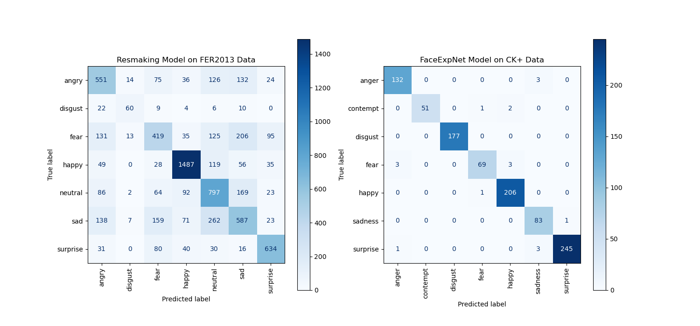

Pengenalan Wajah
Manage makes it simple for software teams to plan day-to-day tasks while keeping the larger team goals in view.

Manage makes it simple for software teams to plan day-to-day tasks while keeping the larger team goals in view.
Dalam Pelatihan Model ini menggunakna dua dataset yang di train di dua model berbeda
Face Expnet adalah sebuah model deep learning yang dirancang khusus untuk pengenalan ekspresi wajah. Model ini dapat menganalisis ekspresi wajah dari gambar atau video dan mengidentifikasi berbagai emosi seperti kebahagiaan, kesedihan, kemarahan, kejutan, dan lainnya.
Resmaking adalah sebuah model AI yang dirancang khusus untuk pengenalan ekspresi wajah menggunakan arsitektur jaringan saraf dalam (deep neural network). Secara teknis, model ini memanfaatkan kombinasi dari jaringan konvolusional (Convolutional Neural Networks atau CNN) dan jaringan residu (Residual Networks atau ResNet).
